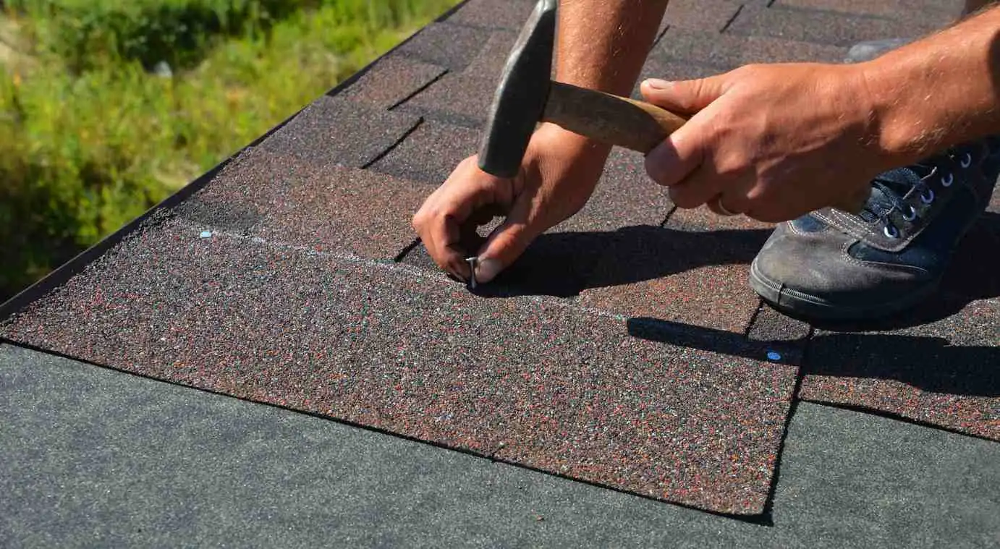
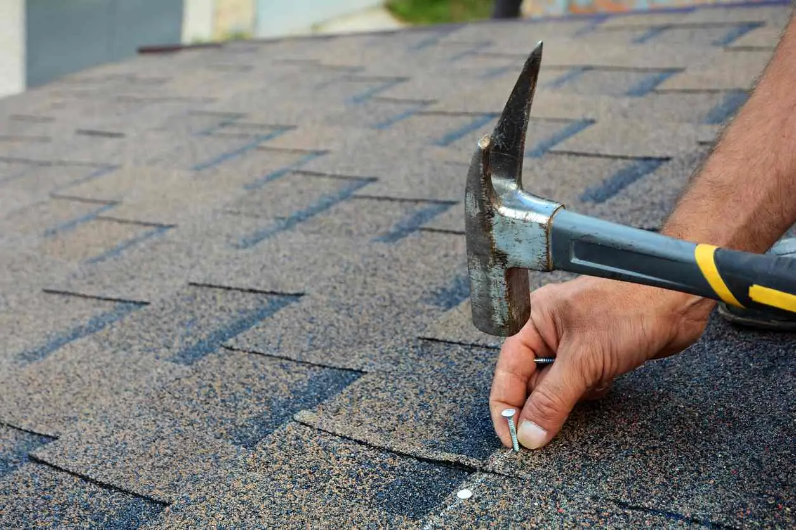

- Architectural Shingles
- Cap Sheet
- Composition Shingles
- Does a New Roof Increase Home Value? What You Should Know
- Impact Resistant Roof
- Laminated Shingles
- Luxury Asphalt Shingles
- Rolled Asphalt Roofing
- What Is a Built-Up Roof?
- What Is a Downspout?

Composition shingles are a popular choice for roofing materials. Whether you’re planning a new roof installation, considering a replacement, or simply wanting to expand your knowledge of roofing materials, understanding composition shingles is important before you choose.
If you’re a curious homeowner, a contractor, or someone who just wants to understand roofing terminology better, read on to discover everything you need to know about composition shingles.
What Are Composition Shingles?
Composition shingles are a popular roofing material made from a mixture of fiberglass or cellulose mat, asphalt, and mineral granules.
These shingles offer durability, affordability, and aesthetic appeal, making them a common choice for residential roofing across the United States.
Composition Shingles vs. Asphalt Shingles
The terms “composition shingles” and “asphalt shingles” are often used interchangeably in the roofing industry. In essence, composition shingles are a type of asphalt shingle. Here are the main differences:
- Traditional asphalt shingles: Made primarily of organic materials (like paper or wood fiber) saturated with asphalt.
- Composition shingles: Typically made with a fiberglass base mat, coated with asphalt and mineral granules.
Are Composition Shingles Worth It?
Composition shingles offer several advantages that make them a worthwhile investment for many homeowners and business owners:
- Cost-effective: Generally more affordable than other roofing materials, like metal or slate.
- Durability: Resistant to fire, wind, and impacts.
- Variety: You have different options of various colors and styles to match your home’s architectural design.
- Easy installation and repair: Less labor-intensive compared to other roofing materials.
What Is the Life Expectancy of Composite Shingles?
Generally, a well-maintained composition shingle roof has a lifespan of around 20 to 30 years. However, environmental elements such as harsh sun exposure, heavy rain, snow, or wind can affect this timeline.
Are Composition Shingles Right for You?
Composition shingles might be the ideal choice for you if:
- You live in an area with moderate climate conditions.
- Your home or business has a standard pitched roof.
- You’re trying to balance cost and durability.
- You want a variety of color and style options to enhance curb appeal.
- Your local building codes or homeowners’ association allows for this roofing material.
Types of Composition Shingles
There are three main types of composition shingles:
- 3-Tab Shingles: The most basic and economical option.
- Architectural Shingles: These have more texture, offering a layered appearance. They are also referred to as dimensional shingles.
- Premium Shingles: The highest quality option, often designed to mimic the look of slate or wood shake roofs.
Appearance of Composition Roofing
Composition shingles can mimic the appearance of various materials:

- Traditional asphalt look with a flat profile (3-tab shingles)
- Textured, dimensional appearance (architectural shingles)
- Slate-like or wood shake-like appearance (premium shingles)
Colors range from basic blacks and grays to more vibrant blues, greens, and reds.
Replacing a Composition Roof
Replacing a composition roof is an important aspect of home maintenance that homeowners and business owners should be aware of to avoid larger, more costly issues in the future. The frequency of replacement can vary depending on several factors, including the quality of the materials used, weather conditions, and the level of upkeep the roof has received over the years.
How Do I Know If My Roof Needs to Be Replaced?
It’s important to monitor your roof for signs of deterioration, which indicates it’s time for a replacement. Common indicators include:
- Curling or buckling shingles
- Missing granules
- There is visible wear and tear on the surface
These signs often suggest the shingles have lost their protective qualities, putting your home at risk for leaks or structural damage. Additionally, if your roof has sustained significant damage from storms or severe weather, it may require a quicker replacement, even within its typical lifespan.
Neglecting to replace a worn-out roof can lead to more serious issues, such as water intrusion, mold growth, and potential damage to the home’s interior. Therefore, scheduling regular inspections and addressing problems early on can extend the life of your roof, ensuring the safety and integrity of your home or business.
Removing Composition Shingles
Removing composition shingles typically involves:
- Stripping off old shingles using a roofing shovel or fork.
- Removing nails and inspecting the underlying structure.
- Disposing of old materials properly (often recyclable).
- Preparing the roof deck for new shingle installation.
Always consult with a professional roofer for safe and effective removal and replacement of composition shingles.
Protect Your Home with American Roofing
Composition shingles offer homeowners and business owners a versatile and affordable roofing solution, without compromising resilience and visual appeal. With various options to suit different styles and climates, composition shingles continue to be a popular choice across the country.
If you’re thinking about replacing your composition roof or need professional advice, don’t hesitate to reach out. Get a personalized quote today, and let us help you protect your home with the best roofing solutions.